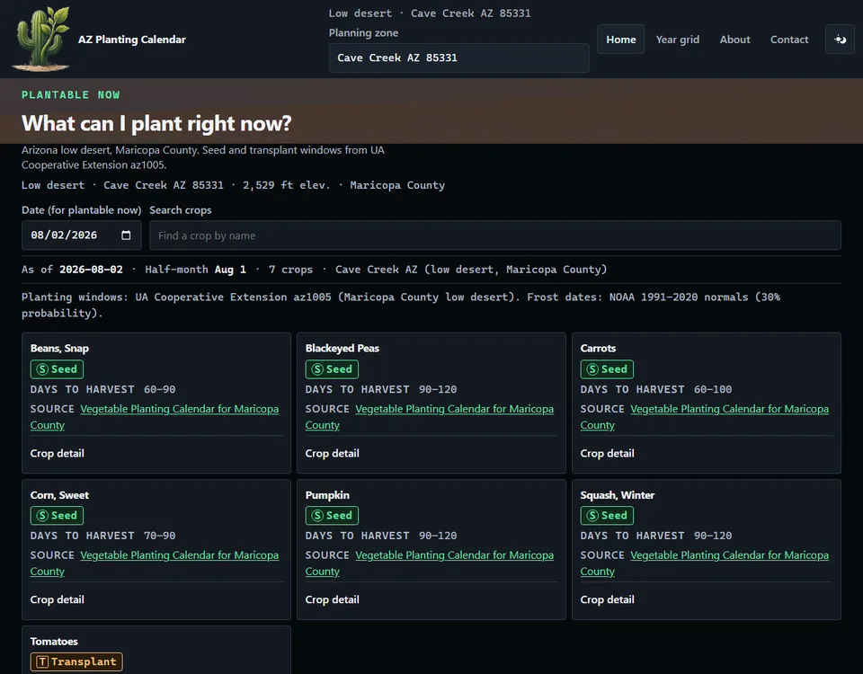
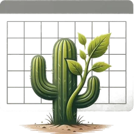

AZ Planting Calendar
Arizona low-desert planting calendar for Maricopa County -- 45 crops, 83 windows, 8 zones.
What it does
Planting data
- 45 crops from UA az1005
- 83 planting windows
- 8 Maricopa zones
Visitor controls
- Plantable-for-date API
- Crop detail + windows
- Zone list / default zone
Limits
- Maricopa low-desert only
- No accounts on public APIs
The app it shipped
-
What is plantable this half-month 
-
The same home, dark theme 
-
Desktop, light 
-
Desktop, dark 
How it was built
1 · The prompt
Show what is plantable in the current half-month window, seed vs transplant marked…
2 · The brand

3 · Provenance
Live counts from /api/crops and /api/zones on 2026-08-02. Screens are production captures, not mockups.